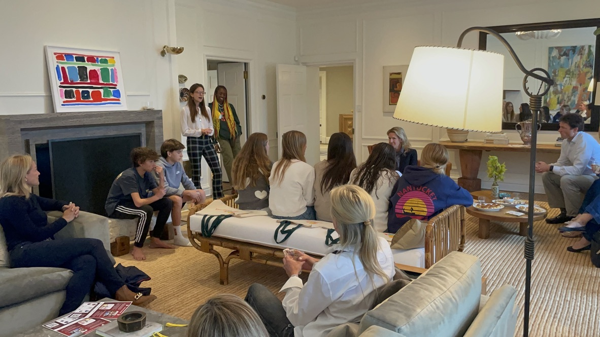

Parents often ask me “what do I need to do to get my kid into a good college?” Underlying that question is a visceral anxiety that you as a parent will fail to set your kid up for success before they leave your nest. And the clock is ticking. Wendy, at your kids’ soccer game, said that her kid has straight As, speaks Mandarin fluently, plays three instruments, and is a double legacy at Harvard. I mean, how can you compete with that?
Every parent has their own style, whether you’re a helicopter parent or take a more laissez-faire approach, but most parents want to do whatever they can to support their children. Maybe you’re dreaming for your child to go to Yale, maybe you just want for them to wake up everyday with a smile on their face and a work ethic they apply to some passion. No matter your approach, you’re not alone in this fear.
To the parents who want what’s best for their child and recognize they have a lot of potential that has yet to be unlocked…I’m writing to you!
What can you do to set your kid up for success?
I’m no expert myself, but speaking from my own personal experiences and seeing the successes my peers at Stanford and the mentors at Curious Cardinals exemplify, I will share my thoughts on what you as a parent can do.
What most of our mentors share is a unique narrative. They’re authentic. None of them were interested in astrophysics and fashion or climate change and art or, in my case, track, debate, gender studies and immigration law, because we were scripting a narrative that we thought would get us into Stanford, Harvard or Princeton. It doesn’t work that way.
I really believe that every single person has something that makes them shine. Some just need help finding that thing and everyone benefits from having support and mentoring to amplify those hobbies, interests or passions. There are a lot of students out there with straight As, but that’s not what distinguishes college candidates. It’s those other things that make you interesting and happy. And this isn’t about getting your kid into college: it’s about supporting them to be their best self.
Again, I don’t profess to be an expert, but here are some suggestions and observations.
1. Expose your kid to new topics, ideas, and people in a way that is fun and authentic…the last thing any kid needs is more pressure.
Rather than signing them up for the club that “sounds the most impressive” or requires the least amount of effort, help them uncover that thing that energizes and excites them. It doesn’t have to be anything particularly glamorous or extraordinary (though that doesn’t hurt), but it should be something truthful.
When I was in high school, my mom insisted that I join her every Sunday on her cultural adventures. She grew up in Winnipeg, Canada, and I grew up in New York. She told me that anyone with half a brain ought to dive into the cultural options available in my hometown, and that was enough to motivate me a bit. She started a ritual called Culture Sunday. From the first Sunday of 9th grade through my entire tenure in high school, every single week we spent at least one hour indulging in a creative adventure. I was reluctant at first, arguing that I didn’t have the time for her art thing. As the weeks, months, and years passed, Culture Sunday became a weekly highlight. I would look forward to our journeys to museums, galleries, theaters, studios, thesis shows, auction houses, arts foundations and so forth. My mom’s enthusiasm and tenacity were contagious in a good way and by junior year, I took great pride in my knowledge of things to do in NYC, not to mention my mastery of contemporary art. I can’t deny that it was also empowering to casually drop some of my art knowledge in classes and with friends. Not surprisingly, by senior year a posse of friends would join Culture Sunday and not just because it always afforded great Instagram opportunities.

Culture Sunday was not my “standout extracurricular” (although I did write a supplementary essay about it in my Stanford application), nor did I end up becoming an art history major, but it taught me invaluable lessons that contributed to how I approached my other extracurricular commitments and now my life professionally. My mom showed me that real interests are more important than checking boxes and building resumes. She also taught me about rituals and learning for the sheer joy of it. Yes, I learned that you can always remember Baroque because the level of ostentatious detailing would lead one to go B-ROKE, but the more important lesson was to be consistent not just in pursuing a hobby, but also in infusing it with joy. Conduct research, bring friends, create rituals, dig in and make your extracurricular activities fun. Make learning a joy.
I applied this “infuse it with fun” mentality to my Saturday mornings volunteering at Association to Benefit Children (ABC). My mom first brought me there as a middle schooler. In 9th grade, when I started attending the regular volunteer slots on Saturdays, reading books to kids and making art with them, I decided that what these kids really needed was fitness. I was a competitive runner and loved few things more than training, and these kids had never really had training and conditioning classes. I was going to infuse the fitness classes with joy, and started a sports club. Whenever I was injured and couldn’t run, I would spend extra time at ABC training and tutoring. It became a cherished community for me. Did I mention that in addition to joy and rituals, communities matter? They bring security and purpose.
Whether it be through reading, cooking, volunteering, inventing, debating, running, filming, betting or blogging, find something fun to do with your kid that expands their worldview and exposes them to the fun of having a passion.
2. Encourage your kid to commit to at least one thing/hobby/passion consistently.
Whether it be a sport or a club or an instrument, commitment and consistency matter.
For a 17 year old, doing something for four years means they’ve committed to it for almost ¼ of their life. Malcolm Gladwell says it takes 10,000 hours to achieve mastery in something. There are 8,760 hours in a year. So, unless you commit time to something consistently, there is no way you’ll achieve greatness with it.
Whether your child aspires to be a professional musician or national debater, you as a parent place value on the importance of having a passion and the value of hard work (rather than valuing what your child is naturally good at, or the potential outcome of hard work).
Why is it important to commit to something deeply and achieve so called greatness within that field? Well, apart from having the consistency to show on a college application, which apparently does matter, achieving a level of distinction within a passion instills a sense of real accomplishment and confidence. That is a feeling you can’t fake or buy and it becomes habitual. Although it took until 11th grade to beat my mile personal record from 8th grade, there was no greater feeling than getting there after so much hard work and perseverance. I yearned to feel that sentiment of reward again.
In your hope to set your child up for success, teaching them the value of hard work and patience are priceless lessons. And expressing the need to devote continued time to an interest to really reap the benefits of hard work accomplishes just that.
It also humanizes success: as a parent, you share that you don’t expect them to be an overnight success, but that you believe if they commit to something consistently, they have the potential to thrive.
Finally, if your child commits to four years of a sport or a club in school or even starts their own blog, by senior year they’ll be eligible to become president or captain of that thing, or recruit underclassmen to join. Even if they haven’t become a nationally ranked debater by that time, they can still learn what it feels to be a leader within their community and to inspire the underclassmen to stick with the interest too.
3. Help your child develop a healthy relationship with social media.
13 to 18 year olds use about 8 and a half hours of screen time per day.
It’s hard to advise your child on a matter that did not even exist when you were a child. But for a parent in 2022, the fear that social media can consume all your kid’s time, open doors to cyber bullies, or whatever other nightmares you can imagine, are real. Ultimately, whatever stance you take on screen time is a personal choice, but no stance or discussion at all can have very real consequences.
I encourage you to have an open discussion with your teen about what they hope to get out of social media time and ask them how you can support them in making sure it doesn’t turn into a distraction or unhealthy habit. Ask them how social media makes them feel. For many high schoolers, girls predominantly, social media can cause or exacerbate unhealthy body insecurities or social anxieties (ever heard of FOMO?). These are issues you likely experienced yourself as a high schooler in the absence of social media, so imagine the role social media plays in heightening those sentiments.
Remember that if you take something away completely, a high schooler wants it more. So as with anything, beware of the consequences of extremism. And while I advocate for supporting your child in navigating social media as a high schooler, I myself was nowhere near perfect, having drained hours of my time on Facetime with friends or mindlessly scrolling Instagram, which is the very reason I share this advice. I wasted hours of my high school life on social media. While I still managed to figure out some semblance of balance, I believe I would have been a lot happier had I used that time more productively - whether that was to go on a walk with my parents or to journal before going to bed or devote more time to a passion of mine.
That’s not to say that some of these hours weren’t spent well - I started a food instagram account and later a college track running account, which were fun, easy ways for me to document my interests and think deeply about building a community with engaging content that unified my followers. My college track account ended up cumulating over 11.7k followers, which felt exciting and motivated me to keep posting. Social media gives young people the potential to be creators and gain real followings, which is powerful. I also appreciated social media as a very social high schooler who wanted to stay in the loop with what my friends were doing and remain connected to them.

In short, social media can be a time suck that hinders your child from unlocking their greatest potential, with potentially grave consequences on their mental health and well-being. It can be a place where they make a mistake, as teenagers do, with irreversible consequences because someone took a screenshot of their stupid post. It can also be a tool your kid can harness to do something great and stay connected to their friends. So weigh the pros and cons, and be honest about the role it’ll play in your teenager’s life.
4. Create a space for your child to be honest about friends, relationships, and mental health.
You may have read headlines like “It’s life or death’: The Mental Health Crisis Among U.S. Teens” or “Why American Teens Are So Sad.” These recent headlines capture the very real and pervasive crisis of an unprecedented number of teens facing mental health struggles today.
Most high schoolers also lack the understanding or vocabulary to articulate what they’re going through. High school is tough! You face social pressures and academic expectations while your body and hormones are changing all over the place. It’s a difficult, awkward time. Without a reliable support system, all these factors can combine to trigger true mental health struggles.
High school is often the time students have their first relationships. Teenagers are not always well versed in how to respect one another romantically or what is appropriate in terms of navigating romantic feelings. They can feel pressured to do what seems “cool” and neglect the harm that “the thing that seems cool” may pose to others. Being treated poorly by your first partner or not receiving romantic attention when your peers are can heighten personal insecurities and consume high schoolers’ headspace. If your child does not seem like their best self, try to imagine what may be occupying their headspace.
Finally, consider the role you play as a parent in heightening or diminishing those pressures and in making yourself a person your child can turn to when confronting hard times. Equally important is to consider how mental health is a prerequisite to success. When facing anxiety, depression, self harm, or eating disorders, how can you expect a teenager to perform their best in the classroom or on the athletic field? So, think about how you as their parent can support them in being their happiest, most well rounded self. Because as soon as mental health is compromised, the other tenets that set the stage for your child to achieve greatness begin to waver.
5. Instill the values that matter most to you in your child.
Growing up with two hard working parents as my role models showed me that hard work was necessary to achieve success. When I rummaged through childhood memorabilia with my dad one Sunday afternoon and we found his graduation pamphlet showing his magna cum laude status, he told me stories about how disciplined he was, doing work on his two-hour subway commute to and from school and every moment he could. I never assumed “success is handed to you on a silver platter.” I looked up to my hardworking dad, whose work ethic never diminished, and felt that success doesn’t come easy to anyone–you have to work relentlessly for it.
My parents also showed me how multi-faceted “success” is. Success is not measured by your income or shiny awards, albeit important and gratifying, but rather success is measured by the fulfillment your work brings you and others. However late my dad would come home from the office, he always returned with a huge smile on his face. And whatever creative, non-linear job my mom was working, she always did work that fueled her creativity, which brought her and others enormous happiness.
My grandpa’s famous quote is: “when you get to the top of the mountain, keep climbing.” My family taught me that success is not an end destination, but a journey. It’s a commitment to continual improvement - of yourself and the world around you.
My parents taught me to appreciate the beauty in differences. They did this by showing me the beauty of cultivating a diverse friend circle. They have friends who are twice their age, half their age, from all ethnic, socioeconomic, and geographic backgrounds. They taught me that the friends you surround yourself with should reflect the colorful wide-ranging beauty that defines our world. You’re not doing yourself or anyone any good having friends who all look like you or come from the same background as you. Each friend plays a different role in your life. Each friend has something that you can learn from. My parents lived in Hong Kong for 8 years and have friends from all over the world. They taught us, growing up, to learn about others and respect others’ traditions and cultures. This appreciation of diversity they instilled in me is what sparked my passion for immigration and criminal justice reform as a high schooler. It’s what sparked my current commitment to making Curious Cardinals the most diverse learning ecosystem it can be today.
My parents also taught me the value of mentorship. My mom and dad, in their own ways, always brought younger, ambitious, motivated individuals along their journey. They’d take an hour out of their evening to give advice. They’d invite their mentees to celebrate the Jewish holidays with us. They taught me to give back the wisdom they accumulated to empower others to do great things too.
I’m so lucky to have parents who instilled some of my most important values in me. As a parent, you can play that role for your child too! Think about what matters to you and how you teach your kids that. Kids pick up on things. Learning these values by seeing you exemplify them is the most tangible way for your child to adopt them themself.


6. Emphasize the value of learning instead of school.
There’s a difference between telling your child to get better grades versus to improve their learning (i.e. making sure they’re effectively learning the material from their classes). Grades are an outcome that does not always align with a kid’s understanding. Maybe your child enters a test with enormous angst and performs poorly under pressure, but in a different environment they would have been able to demonstrate true mastery of the subject. In other cases, they may know how to answer the question according to what they memorized, but don't actually understand what they learned or why this learning matters.
This is not to say grades do not matter. Especially as a high school student, grades are an important part of evaluating student competency across subjects. But, as a parent, you can choose to emphasize your kids’ grades or their learning. The two are not mutually exclusive, but shedding light upon the importance of true learning is critical.
Whatever you emphasize most as a parent affects what your child prioritizes. So be mindful of how much air time you spend emphasizing an end grade, for example, rather than the importance of working your hardest and understanding content well enough to apply it to the world around you. A more effective way to convey the importance of earning good grades is to emphasize the value of what goes into getting a good grade: working hard, staying curious, acquiring a true understanding of the material, pushing yourself to do your best, and learning from the process.
Once your child has fled your nest as a high schooler and trekked off to college, you’ve done your work in influencing their moral compass. Try to think beyond the college acceptance timeline and imagine them as an adult out of college, a spouse in a marriage, a manager with employees, a parent with kids…what values do you hope they exemplify throughout their life? What do you do as their parent to support them in getting there?
7. Empower your kid to dream bigger.
You are what you are able to see and what you are able to believe. You set the bar for who your child can be. In telling your child as you watch Wimbledon on TV or listen to a How I Built This podcast on a drive together, “that can be you one day!” you instill a sense of wonder and hope in them. They think…that can be me one day. Mom or dad believes it!
It’s easy as a kid to feel like your parents “don't get it.” When you’re frustrated that they have spent two hours playing video games or scrolling TikTok, make sure they know where you’re coming from when you urge them to do something else. Try putting yourself in their shoes and think how can I assure them that I get it and understand, but I am looking out for them and want to ensure I’m doing what I can to empower them to be their best self.
Come from a place of encouragement, rather than disparagement. Emphasize to them myriad definitions of success. If you tell your child you believe they could be a billionaire on the cover of Forbes or Supreme Court Justice or the owner of a new Italian restaurant or the author of a book or a journalist for the New York Times, you’re not pigeonholing them into one vision of accomplishment. Instead, you’re giving them the validation that they can actualize their most lofty dreams, whatever they may be. So, when you say “get off your phone” or “find a hobby to commit to for four years,” you’re not limiting your child to the vision of success you have in mind, but instead you are being their biggest cheerleader to help them fulfill their own dreams.

Our Curious Cardinals mentors count themselves among their mentees biggest cheerleaders. Would your child like to work with a college mentor that shares their identities and passions, and helps them fulfill their wildest dreams? Find their dream mentor match here.